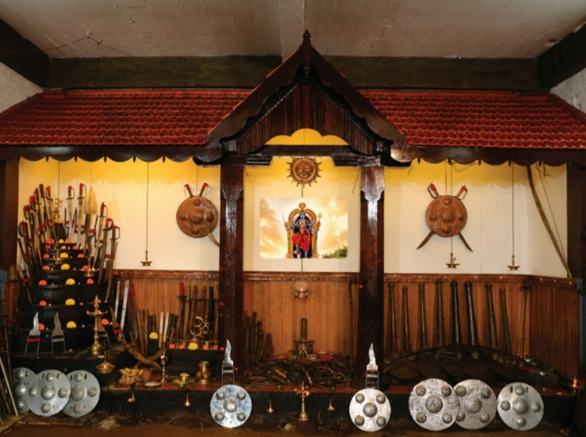
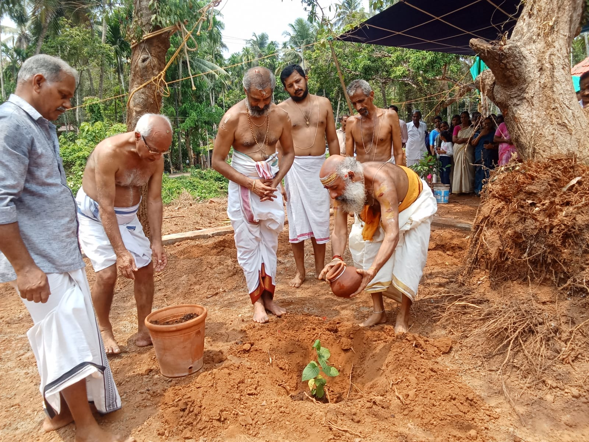
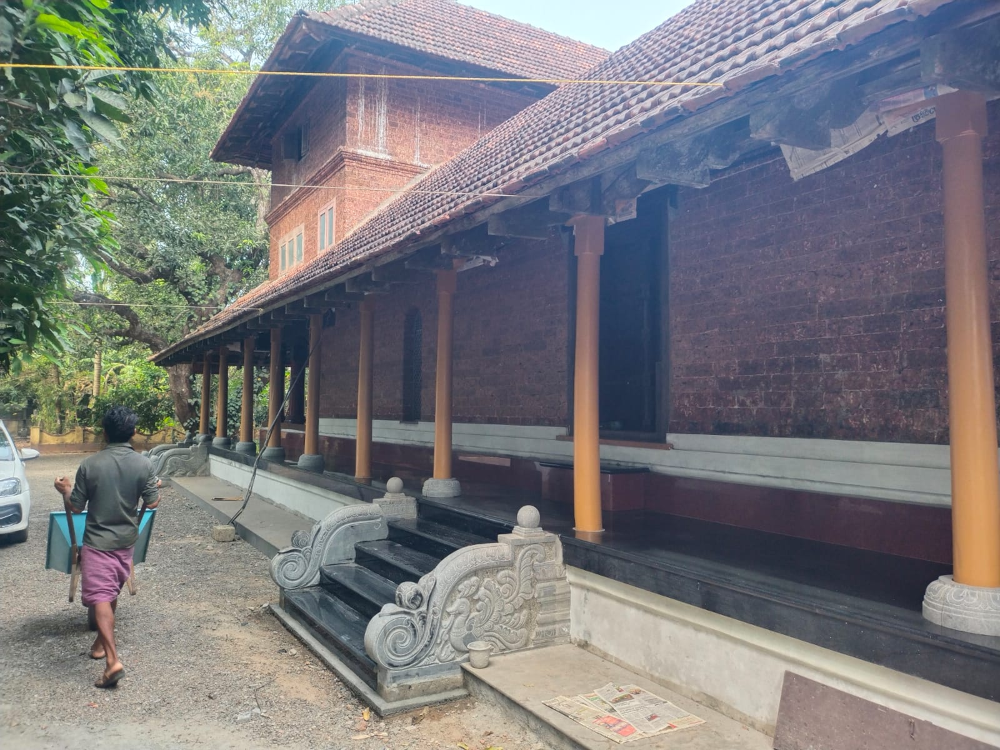
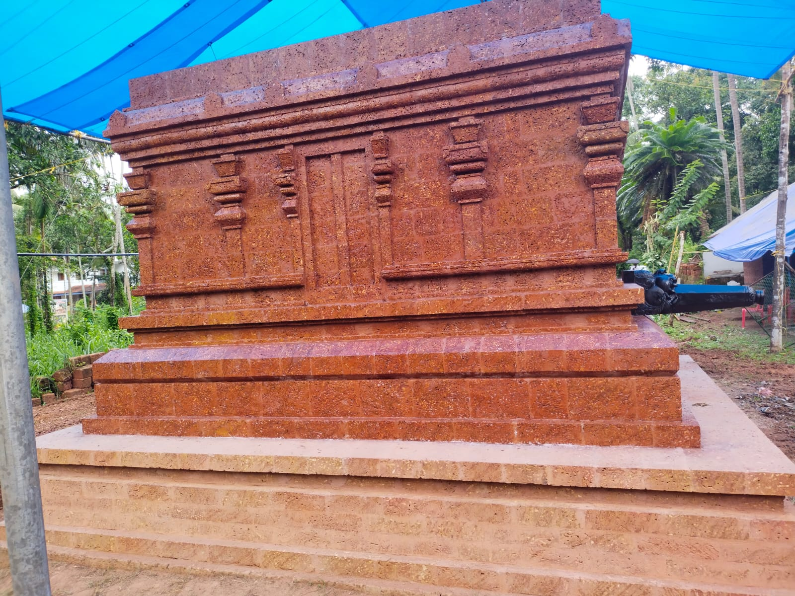
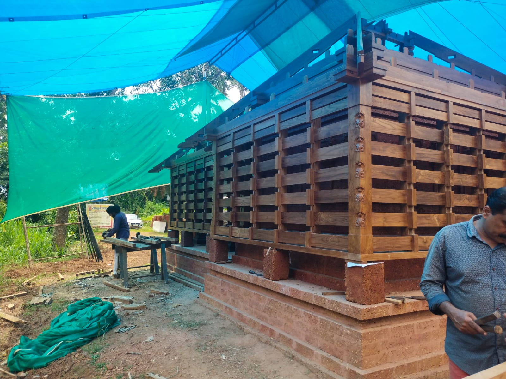

പൂക്കോം ശ്രീ പൂകുന്നത്ത് കാട്ടുമാടം മുത്തശ്ശ്യമ്മ ക്ഷേത്രം
പൂക്കോത്ത് മഠം · പൂക്കോം ദേശത്തിന്റെ ഐശ്വര്യ ദേവതനൂറ്റാണ്ടുകളായി പൂക്കോം ദേശത്തെ കാത്തുപോരുന്ന അമ്മ. ഭക്തരുടെ കൈകോർത്ത പരിശ്രമത്തിൽ ക്ഷേത്രം ഇന്ന് വീണ്ടും പഴയ പ്രതാപത്തിലേക്ക് — ശ്രീകോവിലും തേവാര മഠവും കളരി കലാക്ഷേത്രവും നക്ഷത്രവനവും ഉൾപ്പെടെ.
കണ്ണൂർ, തലശ്ശേരി, പാനൂർ, പൂക്കോം
രണ്ട് നൂറ്റാണ്ടിന്റെ വിശ്വാസം
പൂക്കോം പ്രദേശത്തിന്റെ ഐശ്വര്യ ദേവതയായിരുന്നു എക്കാലത്തും ശ്രീ മുത്തശ്ശ്യമ്മ. ഭക്തസഹസ്രങ്ങളുടെ ഭക്തിവാത്സല്യത്താലും ആരാധനാ സമ്പ്രദായത്തിലെ വ്യത്യസ്തത കൊണ്ടും ഒരു ദേശത്തിന്റെ നാമമായി ആ പ്രദേശത്തിന്റെ കാവലായി, സർവ്വവിധ പ്രൗഢിയോടെ പരിപാലിച്ചിരുന്നു ശ്രീ മുത്തശ്ശ്യമ്മയെയും അമ്മയുടെ തട്ടകത്തെയും.
ഏതാണ്ട് രണ്ടായിരത്തിലധികം ആണ്ടുകൾക്ക് മുൻപ് അന്നത്തെ നാട്ടുരാജാക്കന്മാരുടെ നേരിട്ടുള്ള മേൽനോട്ടത്തിൽ കൊട്ടാര സദൃശ്യമായ ക്ഷേത്രം പണികഴിപ്പിക്കപ്പെട്ടു എന്നും നാടിന്റെ സർവ്വവിധ ക്ഷേമത്തിനുമായി ആരാധന ക്രമങ്ങൾ ചിട്ടപ്പെടുത്തി പരിപാലിച്ചുവെന്നും പിന്നീട് കാലചക്രം തിരിയവെ ക്ഷേത്രത്തിന്റെ അവകാശം വടക്കെ മലബാറിലെ അന്നത്തെ പ്രധാന തന്ത്രമാന്ത്രികപരമ്പരയായ കാട്ടുമാടം സമ്പ്രദായത്തിന്റെ കൈകളിൽ എത്തിച്ചേർന്നതാകാം എന്നും ഐതിഹ്യം പറയുന്നു.
മാന്ത്രിക വിദ്യയിൽ അഗ്രഗണ്യരായ കാട്ടുമാടം തിരുമേനിമാരുടെ കീഴിൽ ക്ഷേത്രത്തിൽ ഏറെ സങ്കീർണ്ണമായ പലവിധ മാനുഷിക പ്രശ്നങ്ങൾക്കും പരിഹാരം കണ്ടിരുന്നു. അതിലൂടെ ക്ഷേത്രം ഏറെ അറിയപ്പെട്ടതായും പറയപ്പെടുന്നു. സൽസന്താന ലബ്ധിക്കായി ഇവിടെ ദമ്പതിമാർ ഭജന ഇരുന്നു പ്രാർത്ഥിച്ചതായും നിരവധി ആളുകൾക്ക് അതുവഴി ഫലപ്രാപ്തി ഉണ്ടായതായും പഴമക്കാർ പറഞ്ഞു കേട്ടിട്ടുണ്ട്.
കലുഷിതമായ ജീവിത സാഹചര്യങ്ങളിൽ മാനസികവിഭ്രാന്തിക്കടിമപ്പെട്ട് മനോനില തെറ്റിയ ആളുകൾക്ക് എന്നും അത്താണിയായിരുന്നു കാട്ടുമാടം മുത്തശ്ശ്യമ്മ ക്ഷേത്രം. മുത്തശ്ശ്യമ്മയെ തൊഴുതു പ്രാർത്ഥിച്ച് ഭജന ഇരുന്ന് കാട്ടുമാടം തിരുമേനിമാരുടെ മന്ത്രശക്തിയാൽ മനോനില വീണ്ടെടുത്ത് സാധാരണ ജീവിതത്തിലേക്ക് തിരിച്ചു വന്ന നിരവധിയായ ആളുകളുടെ കഥകൾ പഴമക്കാർ പറഞ്ഞറിഞ്ഞത് ഇന്നും ഈ പ്രദേശത്തുകാർ അത്ഭുതത്തോടെ ഓർക്കുന്നുണ്ട്.
ഇരുവേനാട് എന്നറിയപ്പെട്ടിരുന്ന ഈ പ്രദേശത്തിന്റെ തിലകക്കുറിയായി നൂറ്റാണ്ടുകളോളം പരിപാലിച്ചിരുന്ന ഈ ക്ഷേത്രം ടിപ്പുവിന്റെ ലഹളയോടെ നാശോന്മുഖമായി തീർന്നു. ഉടമസ്ഥരായ കാട്ടുമാടം നമ്പൂതിരിമാർ പ്രാണഭയത്താൽ തെക്കൻ ജില്ലകളിലേക്ക് കുടിയേറിയതായി കാണാം. ക്ഷേത്രവും സ്വത്തുക്കളും നോക്കി നടത്തി പരിപാലിക്കാൻ പാട്ടാളിയായി കുറ്റേരി തറവാട്ടു കാരണവരെ ഏൽപ്പിച്ചതായി രേഖകൾ പറയുന്നു.
ഏതാണ്ട് 50 വർഷങ്ങൾ മുൻപുവരെ ഒരു നേരത്തെ പൂജയും വാർഷിക പാട്ടുത്സവവുമായി ക്ഷേത്രം ഒരു വിധം നിലനിന്നിരുന്നു. ക്രമേണ നാശോന്മുഖമായ ക്ഷേത്രം ശ്രദ്ധിക്കാൻ ആളില്ലാതെ നാട്ടുകാരുടെയും ഭക്തരുടെയും അശ്രദ്ധയോ അറിവില്ലായ്മയോ മൂലം തകർന്നു പോവുകയും ക്ഷേത്ര സ്വത്തുക്കൾ അന്യാധീനപ്പെട്ടുപോവുകയും ചെയ്തു. അരനൂറ്റാണ്ടു കാലത്തെ ഗ്രാമചരിത്രം എടുത്ത് പരിശോധിച്ചാൽ ഈ ക്ഷേത്ര സ്വത്തുക്കൾ കൈയൊഴിഞ്ഞവരും കൈവശപ്പെടുത്തിയവരും അനുഭവിച്ച് പോന്നത് വർണ്ണനാതീതമായ ദുരിതങ്ങളാണെന്ന് നമുക്ക് മനസ്സിലാക്കാം.
ഭക്തർക്കൊപ്പം ഒരു പുതിയ തുടക്കം
എന്നാൽ ക്ഷേത്രം ഇന്ന് പുനരുദ്ധാരണത്തിന്റെ വഴിയിലാണ്. സുമനസ്സുകളായ നാട്ടുകാരുടെയും വിശിഷ്യാ മുത്തശ്ശ്യമ്മയുടെ ഭക്തരായ ആളുകളുടെയും പരിശ്രമത്താൽ ക്ഷേത്രം സ്ഥിതിചെയ്യുന്ന സ്ഥലം ഭാഗികമായി ഏറ്റെടുത്ത് പുനരുദ്ധാരണ പ്രവർത്തികൾ ചെയ്തു വരുന്നു.
ക്ഷേത്ര ശ്രീകോവിലിന്റെ പണി ഏകദേശം പൂർത്തിയാക്കാൻ സാധിച്ചിട്ടുണ്ട്. ഒരു വ്യാഴവട്ടം മുൻപ് 2010 ലാണ് നാട്ടുകാരുടെ ആഗ്രഹത്തിന്റെ ഫലമായി പുനരുദ്ധാരണ പ്രവർത്തനങ്ങൾക്ക് തുടക്കമാവുന്നത്. ഈ കാലയളവിൽ ക്ഷേത്ര തിരുമുറ്റത്ത് നടന്ന രണ്ട് അഷ്ടമംഗല്യ പ്രശ്ന ചിന്തയിലും തർക്കങ്ങൾക്ക് വഴിയില്ലാതെ അടിവരയിട്ട് പറഞ്ഞകാര്യം നമ്മളെയെല്ലാം അതീവ വാത്സല്യത്തോടെ സംരക്ഷിച്ച് പോകുന്ന മുത്തശ്ശ്യമ്മയെന്ന ഭക്തവത്സലയായ ദേവി ചൈതന്യത്തെ താമസം വിനാ യഥാവിധി പുനഃപ്രതിഷ്ഠ നടത്തി നാടിനെ സംരക്ഷിക്കണം എന്നാണ്.
പാട്ടുപുര സമ്പ്രദായത്തിലാണ് ക്ഷേത്ര ശ്രീകോവിൽ നിർമ്മാണം നടക്കുന്നത്. ഉദ്ദേശിക്കുന്ന രീതിയിൽ ശ്രീകോവിൽ നിർമ്മാണം നടക്കുന്നതോടെ സമീപ പ്രദേശങ്ങളിൽ ഒന്നും തന്നെ ഇല്ലാത്ത ശില്പ ഭംഗിയുള്ള ശ്രീകോവിൽ നമുക്ക് ദർശിക്കാനാവും.

ക്ഷേത്രം — സമർപ്പണ സംഖ്യ
| # | നിർമ്മാണ ഇനം | സൂചക തുക (₹) |
|---|---|---|
| 1 | ക്ഷേത്ര തറ | 1,00,000 |
| 2 | ക്ഷേത്ര ചുമര് | 1,50,000 |
| 3 | സോപാനം — വലുത് - 1 | 36,000 |
| 4 | സോപാനം — ചെറുത് - 1 | 22,000 |
| 5 | പാട്ടുപുരയുടെ കരികൽ തൂൺ 4 എണ്ണം (4×25000) | 1,00,000 |
| 6 | പാട്ടുപുരയുടെ കരികൽ ഭിത്തി | 1,80,000 |
| 7 | ഓവ് കരികൽ | 10,000 |
| 8 | അഴിക്കൂടിന്റെ വലിയ തൂൺ (8×20000) | 1,60,000 |
| 9 | ശ്രീകോവിൽ വലിയ ഉത്തരം | 1,00,000 |
| 10 | അഴിക്കൂടിന്റെ ചെറിയ ഉത്തരം | 60,000 |
| 11 | അഴിക്കൂടിന്റെ ചെറിയ തൂണുകൾ 36 എണ്ണം (36×10000) | 3,60,000 |
| 12 | ശ്രീകോവിൽ മേൽക്കൂരയുടെ കഴുക്കോൽ 36 എണ്ണം (36×10000) | 3,60,000 |
| 13 | ശ്രീകോവിൽ മച്ച് | 20,000 |
| 14 | പാട്ടു പുരയുടെ മച്ച് | 30,000 |
| 15 | ശ്രീകോവിൽ വലിയ വാതിൽ | 80,000 |
| 16 | പാട്ടുപുരയുടെ ചെറിയ വാതിൽ | 20,000 |
| 17 | താഴികക്കുടം 3 എണ്ണം (3×20000) | 60,000 |
| 18 | ഗണപതി ശ്രീകോവിൽ നിർമ്മാണത്തിന് | 1,00,000 |
| 19 | ശ്രീകോവിലിന്റെ ചുറ്റുമതിൽ നിർമ്മാണം | 3,00,000 |
| 20 | ശ്രീകോവിലിന് മുന്നിൽ നടപ്പന്തൽ നിർമ്മിക്കാൻ ചെലവ് | 10,00,000 |
| 21 | ശ്രീകോവിലിനും തേവാര മഠത്തിനും ചുറ്റും കരികൽ പതിക്കാൻ | 3,00,000 |
| ആകെ സൂചക എസ്റ്റിമേറ്റ് | 35,48,000 |
തേവാര മഠം
ആദികാലത്ത് ക്ഷേത്രത്തോടൊപ്പമോ ഒരുവേള അതിനേക്കാൾ കൂടുതലോ പ്രാധാന്യം പൂകുന്നത്ത് തേവാരമഠത്തിന് ഉണ്ടായിരുന്നു. കാട്ടുമാടം നമ്പൂതിരിമാരുടെ തേവാര മൂർത്തികളായ ചാത്തൻ മുതലായ ദേവതാസങ്കല്പങ്ങളെ തേവാരമഠത്തിൽ വച്ചായിരുന്നു ആരാധിച്ചു പോന്നിരുന്നത്. കാട്ടുമാടം തിരുമേനിമാർ മന്ത്രവാദ സംബന്ധമായ കാര്യങ്ങൾക്ക് വന്നിരുന്നതും അത്തരം കർമ്മങ്ങൾ നടത്തി വന്നതും തേവാര മഠത്തിൽ വച്ചായിരുന്നു. പൂക്കോത്ത് മഠം എന്നായിരുന്നു ഇവിടം അറിയപ്പെട്ടിരുന്നത്. ഒരു നൂറ്റാണ്ട് മുൻപ് നിരവധിയായ രോഗികൾക്കും അശരണർക്കും അത്താണിയായിരുന്ന മഠം പിന്നീട് നശിച്ച് നാശോന്മുഖമാവുകയായിരുന്നു.
അന്നത്തെ അതേ പ്രൗഢിയോടെ ക്ഷേത്രത്തോടൊപ്പം തേവാരമഠവും നിർമ്മിച്ച് സമർപ്പിക്കുക എന്നതാണ് ക്ഷേത്ര സംരക്ഷണ സമിതിയുടെ ലക്ഷ്യം. കാട്ടുമാടം തിരുമേനിമാരുടെ പ്രധാന ഉപാസനാ മൂർത്തികളായ ഭൈരവൻ, വിഷ്ണുമായ, ഭദ്രകാളി, കുട്ടിച്ചാത്തൻ, ഗുളികൻ എന്നീ ദേവതാ സങ്കല്പങ്ങളെ തേവാരമഠത്തിൽ വച്ച് ആരാധിച്ചു വന്നിരുന്നു. അതുപോലെ തന്നെ മുത്തശ്ശ്യമ്മയുടെ പ്രധാന ഉപദേവനായി ഒക്കത്ത് ഗണപതിക്കും ക്ഷേത്രത്തിൽ പ്രത്യേക സ്ഥാനവും പൂജകളും ചെയ്തു വന്നിരുന്നു. തേവാരമഠത്തിൽ ശ്രീചക്രം പ്രതിഷ്ഠിച്ച് നടത്തിവന്നിരുന്ന പ്രത്യേക പൂജയും ഏറെ ശ്രേയസ്കരമായിരുന്നു എന്ന് ചരിത്രം പറയുന്നു.
ശ്രീ പൂകുന്നത്ത് കാട്ടുമാടം മുത്തശ്ശ്യമ്മ ക്ഷേത്രത്തിന്റെ പുനർനിർമ്മാണ പ്രവൃത്തികൾ യഥാവിധി നടത്തി ദേവ പ്രതിഷ്ഠ ചെയ്ത് സൽഗതി വരുത്തിയാൽ മാത്രമേ ഈ നാടിനു ശാപമോക്ഷം ലഭിക്കുകയുള്ളൂ. അതുവരെയും ദുരിതങ്ങളും കഷ്ടപ്പാടുകളും പരസ്പര വിദ്വേഷവും പേറി നമുക്ക് മുന്നോട്ട് പോവേണ്ടതായി വരും. അതിനാൽ തന്നെ നമ്മുടെ നാടിന്റെ രക്ഷയ്ക്കായി വരും തലമുറയുടെ മോചനത്തിനായി നമുക്ക് കൈകോർക്കാം. ക്ഷേത്ര പുനരുദ്ധാരണം എന്ന ക്ഷേത്ര സേവാസമിതിയുടെ ആത്യന്തിക ലക്ഷ്യത്തിനായി ഒത്തു ചേരാം. ഭീമമായ സാമ്പത്തിക ചെലവുകളും സമർപ്പണവും ഇതിലേക്കായി ആവശ്യമാണ്. എല്ലാവരും കുടുംബം ലക്ഷ്യപൂർത്തിക്കായി പരിശ്രമിക്കുക. എല്ലാവർക്കും ഭക്തവത്സലയായ ആശ്രിതവത്സലയായ ശ്രീ മുത്തശ്ശ്യമ്മയുടെ അനുഗ്രഹാശിസ്സുകൾ ഉണ്ടാകട്ടെ.
തേവാര മഠം — സമർപ്പണ സംഖ്യ
| # | നിർമ്മാണ ഇനം | സൂചക തുക (₹) |
|---|---|---|
| 1 | തേവാര മഠം തറ | 2,50,000 |
| 2 | ചുമര് | 3,00,000 |
| 3 | പൂമുഖം | 2,00,000 |
| 4 | തേവാര മഠം കട്ടില - 5 എണ്ണം (30000×5) | 1,50,000 |
| 5 | സോപാനം 3 എണ്ണം (30000×3) | 90,000 |
| 6 | കരികൽ തൂണുകൾ വരാന്തയ്ക്ക് - 18 എണ്ണം (25000×18) | 4,50,000 |
| 7 | കരികൽ തൂണുകളുടെ പീഠം 18 എണ്ണം (18×5000) | 90,000 |
| 8 | തൂണുകളുടെ ഇടയിലുള്ള കരികല്ലിന്റെ അരഭിത്തി 8 എണ്ണം (8×50000) | 4,00,000 |
| 9 | ജനലുകൾ - 6 എണ്ണം (6×25000) | 1,50,000 |
| 10 | കഴുക്കോൽ 150 എണ്ണം (150×6000) | 9,00,000 |
| 11 | തേവാര മഠം മച്ച് പാവൽ - (100000×3) | 3,00,000 |
| 12 | തേവാര മഠം ഓട് 3000 എണ്ണം | 1,20,000 |
| 13 | തേവാര മഠം മുഴുവൻ സംഖ്യ | 34,00,000 |
| തേവാര മഠം — ആകെ സൂചക സംഖ്യ | 34,00,000 |
വന്ദേ പത്മനാഭം
പ്രണാമം പ്രിയപ്പെട്ട പപ്പേട്ടന്...
കാലം എത്രകഴിഞ്ഞാലും ജനമനസ്സുകളിൽ ഒളിമങ്ങാതെ കിടക്കും പ്രിയപ്പെട്ട പപ്പേട്ടന്റെ ഓർമ്മകൾ. കാരണം ഞങ്ങൾക്ക് അത്രയും പ്രിയപ്പെട്ടവനായിരുനു പപ്പേട്ടൻ. വലിയ ചെറുപ്പമില്ലാതെ എല്ലാവരെയും ഒരുപോലെ സ്നേഹിച്ചു കരുതലോടെ ചേർത്തുപിടിച്ച മഹത് വ്യക്തിത്വം. വലുതും ചെറുതുമായ നിരവധി സ്വപ്നങ്ങൾ ഞങ്ങളുമായി പങ്കുവെച്ച ഞങ്ങളുടെ വഴികാട്ടി. നാടിന്റെ വികസനത്തിനായി ഞങ്ങളിലൊരാളായി ഞങ്ങൾക്ക് മുൻപേ നടന്ന നേതൃപാഠവം.
ഏറെക്കാലം ഒരു നാട് അനുഭവിച്ച യാത്രാ ദുരിതത്തിന് അറുതിവരുത്തിയ സ്വന്തം പിതാവിന്റെ ഓർമ്മക്കായി നാടിന് സമർപ്പിച്ച 'രാവണൻപാലം' ഒരു തിലകക്കുറിയായി നിലനിൽക്കുന്നു. പപ്പേട്ടന്റെ ഏറ്റവും വലിയ സ്വപ്നമായിരുന്നു കാലഹരണപ്പെട്ടുപോയ പൂകുന്നത്ത് കാട്ടുമാടം മുത്തശ്ശ്യമ്മ ക്ഷേത്രത്തിന്റെയും കാട്ടുമാടം കളരിയുടെയും പുനരുദ്ധാരണം.
അദ്ദേഹത്തിന്റെ ധീഷണമായ ചിന്തകൾക്കൊപ്പം ഒരു നാട് കൂട്ടുനിന്നപ്പോൾ ക്ഷേത്ര പുനരുദ്ധാരണം ത്വരിതഗതിയിൽ നടന്നു. പക്ഷെ വിധി ഞങ്ങൾക്കായി ഒരുക്കിവെച്ചത് മറ്റൊന്നായിരുന്നു. പുത്തൻവീട്ടിൽ പത്മനാഭൻ എന്ന ആ മഹാമാനുഷി അകാലത്തിൽ ഞങ്ങളെ തനിച്ചാക്കി വിഷ്ണുപാദം പൂകി. പക്ഷെ അദ്ദേഹത്തിന്റെ ഓർമ്മകൾ മാത്രം മതി ഞങ്ങൾക്ക് തുടങ്ങിവെച്ച സ്വപ്നങ്ങൾ പൂർണ്ണതയിൽ എത്തിക്കുവാൻ. തിരുവനന്തപുരത്ത് ഇരിക്കുമ്പോഴും സ്വന്തം നാടിനെ വല്ലാതെ സ്നേഹിച്ച ആ വലിയ മനസ്സിന് മുൻപിൽ ഞങ്ങൾ ശതകോടി കണ്ണീർ പ്രണാമങ്ങൾ അർപ്പിക്കുന്നു. കുടുംബത്തിന്റെ വേദനയിൽ ഈ നാടും പങ്കു ചേരുന്നു.
പപ്പേട്ടന്റെ വലിയ സ്വപ്നങ്ങളിൽ ഒന്നായിരുന്നു കാട്ടുമാടം കളരി. അദ്ദേഹത്തിന്റെ ഓർമ്മയ്ക്കായി ആ പേരിൽ മികച്ച രീതിയിൽ കളരി പണിത് നാടിന് സമർപ്പിക്കുക എന്നതാണ് നമുക്ക് പപ്പേട്ടനു വേണ്ടി ചെയ്യാനുള്ള ദൗത്യം. അതിനായി പപ്പേട്ടനെ സ്നേഹിച്ച മുഴുവൻ ആളുകളുടെയും സ്നേഹപൂർണ്ണമായ സഹകരണം പ്രതീക്ഷിക്കുന്നു.
കളരി കലാക്ഷേത്രം
ഭക്തിരസ പ്രാധാന്യത്തോടൊപ്പം മറ്റ് മേഖലകളിലും അതായത് കലാപരവും കായികപരവുമായ രംഗത്ത് ശ്രദ്ധയൂന്നി ആരോഗ്യമുള്ള സമൂഹത്തെ സൃഷ്ടിക്കുക എന്നതാണ് ക്ഷേത്ര സേവാസമിതിയുടെ ലക്ഷ്യമാണ്. അതിനായി കാട്ടുമാടം കളരി കലാക്ഷേത്രം പ്രവർത്തനം ആരംഭിച്ചിട്ടുണ്ട്. മുത്തശ്ശ്യമ്മ ക്ഷേത്രവും ഏറ്റവും പഴക്കംചെന്ന ആയോധന കലയായ കളരിയും തമ്മിൽ ഏറെ ബന്ധമുണ്ട്.
ക്ഷേത്രത്തിൽ ചെണ്ട, നൃത്തം, സംഗീതം തുടങ്ങിയ കലാരൂപങ്ങളും ആരംഭിച്ചിട്ടുണ്ട്. ഇവയൊക്കെ ശരിയായ രീതിയിലേക്ക് വന്നാൽ ഒരു ദേവീക്ഷേത്രത്തിൽ വേണ്ട എല്ലാ പ്രൗഢിയും ശ്രീ പൂകുന്നത്ത് കാട്ടുമാടം മുത്തശ്ശ്യമ്മ ക്ഷേത്രം കൈവരിക്കും.

പൂകുന്നത്തകം
നിലവിൽ നടന്ന് വരുന്ന കാട്ടുമാടം കളരി സജീവമാക്കി മറ്റ് കളരികളുടെ സഹകരണത്തോടെ വർഷത്തിൽ പൂകുന്നത്തകം എന്ന പേരിൽ സംസ്ഥാനത്തിന്റെ വിവിധയിടങ്ങളിൽ കളരി പ്രദർശനങ്ങൾ സംഘടിപ്പിക്കാൻ പദ്ധതിയുണ്ട്. അച്ചടക്കമുള്ള, ആരോഗ്യമുള്ള, സാമൂഹിക പ്രതിബദ്ധതയുള്ള ഒരു പുതിയ യുവതയെ വാർത്തെടുക്കുക മാത്രമാണ് ഈ ഒരു കാര്യത്തിലൂടെ ലക്ഷ്യമിടുന്നത്.
ഒപ്പം തച്ചോളി ഒതേനനും, ആരോമൽ ചേകവരും ഉണ്ണിയാർച്ചയും തുടങ്ങി നിരവധിയായ വീരന്മാർ അരങ്ങ് വാണ ഈ നാട്ടിൽ കളരിയെന്ന ആയോധന കലയുടെ അനന്ത സാധ്യതകൾ ഒളിമങ്ങാതെ സംരക്ഷിക്കുക എന്ന സുപ്രധാന ദൗത്യവും കാട്ടുമാടം കളരി കലാക്ഷേത്രം ലക്ഷ്യം വെക്കുന്നു.
പൂകുന്നത്ത് കാട്ടുമാടം കളരി നിർമ്മാണ ചെലവ്
| # | നിർമ്മാണ ഇനം | സൂചക തുക (₹) |
|---|---|---|
| 1 | കളരിസ്ഥാനത്തിന്റെ നിർമ്മാണ ചെലവ് അടിത്തറ അടക്കം | 3,00,000 |
| 2 | പൂത്തറ | 1,00,000 |
| 3 | നിലം തറയോട് പാകൽ | 3,00,000 |
| 4 | മതിലിന് ചുറ്റും കരികൽ പതിക്കാൻ | 2,00,000 |
| 5 | കളരിയുടെ പുറം ചുമര് | 4,00,000 |
| 6 | മുന്നിലെ വരാന്ത തറയടക്കം | 2,00,000 |
| 7 | കരികൽ തൂണുകൾ 10 എണ്ണം (10×25000) | 2,50,000 |
| 8 | 2 ഭാഗം അഴികൂട്ടിന് | 4,00,000 |
| 9 | മേൽക്കൂര ഉത്തരം | 4,00,000 |
| 10 | കഴുക്കോൽ (100×5000) | 5,00,000 |
| 11 | ഓട് (3000 എണ്ണം) | 1,20,000 |
| ആകെ സൂചക എസ്റ്റിമേറ്റ് | 31,70,000 |
ജന നക്ഷത്ര വൃക്ഷവനം
ശ്രീ പൂകുന്നത്ത് കാട്ടുമാടം മുത്തശ്ശ്യമ്മ ക്ഷേത്രം ഏറെ പ്രാധാന്യത്തോടെ നടപ്പിൽ വരുത്താൻ ഉദ്ദേശിക്കുന്ന ഒരു പദ്ധതിയാണ് ജനനക്ഷത്ര വൃക്ഷവനം. ഭാരതീയ ജ്യോതിഷത്തിൽ അശ്വതി മുതൽ രേവതി വരെയുള്ള 27 നക്ഷത്രങ്ങളിൽ ഓരോ നക്ഷത്രത്തിനും ഓരോ വൃക്ഷം കൽപ്പിക്കപ്പെട്ടിട്ടുണ്ട്. ഓരോരുത്തരും അവരവരുടെ ജന്മനക്ഷത്ര വൃക്ഷം നട്ട് പരിപാലിച്ചാൽ ആയുസ്സും ആരോഗ്യവും ഐശ്വര്യവും വർദ്ധിക്കുമെന്നാണ് ഹൈന്ദവ വിശ്വാസം.
ക്ഷേത്ര പറമ്പിനോട് ചേർന്ന് 27 ജനനക്ഷത്ര വൃക്ഷങ്ങളും നട്ടുപിടിപ്പിച്ച് ഓരോ വൃക്ഷത്തിനും പ്രത്യേകം തറകൾ കെട്ടി സംരക്ഷിച്ച് മനോഹരമായ ഒരു നക്ഷത്രവനം ഒരുക്കാൻ ക്ഷേത്രം ലക്ഷ്യമിടുന്നു.
ജന്മനക്ഷത്രവും അതിന്റെ വൃക്ഷവും
നക്ഷത്ര വൃക്ഷം വഴിപാടായി സമർപ്പിക്കാൻ
| ഇനം | തുക (₹) |
|---|---|
| 27 ജനനക്ഷത്ര വൃക്ഷം പ്രതിഷ്ഠാ യജ്ഞം | 27,000 |
| ഒരു നക്ഷത്ര വൃക്ഷത്തിന്റെ തറ നിർമ്മാണ ചിലവ് | 1,00,000 |
| ഒരു വൃക്ഷം പ്രതിഷ്ഠിക്കാനും ആജീവനാന്ത പൂഷ്പാഞ്ജലിക്കും | 3,000 |
| ഒരു വർഷം നക്ഷത്ര പൂജയ്ക്കും മറ്റു വിശേഷാൽ പൂജയ്ക്കും | 1,000 |
മുത്തശ്ശ്യമ്മയ്ക്ക് ഒരുപിടി മണ്ണ്
ക്ഷേത്രക്കുളം നിലകൊള്ളുന്ന 40 സെന്റ് ഭൂമിക്കൊപ്പം അന്യാധീനപ്പെട്ട സ്ഥലത്ത് ബാക്കിവരുന്ന 72 സെന്റ് കൂടി ക്ഷേത്ര സംരക്ഷണ സമിതിക്ക് വിലയ്ക്കു നൽകാൻ ഇപ്പോഴത്തെ കൈവശക്കാർ സമ്മതിച്ചിട്ടുണ്ട്. ഈ ഭൂമി തിരികെ വാങ്ങാൻ ആയിരം രൂപ വീതം ഒരു "പിടി മണ്ണ്" ആയി സമർപ്പിക്കുന്ന 100 ഭക്തരെ ഈ പദ്ധതിയിൽ പങ്കാളികളാക്കുകയാണ് ലക്ഷ്യം.
മുത്തശ്ശ്യമ്മയ്ക്ക് ഒരുപിടി മണ്ണ് മനസ്സോടെ സമർപ്പിച്ചാൽ ആ ആളെ അമ്മ കൈവിടില്ല എന്നാണ് വിശ്വാസം. ഭാവിയിൽ സ്വന്തമായി ഭൂമി സമ്പാദിക്കാനും വീട് വെക്കാനുമുള്ള ആഗ്രഹത്തിന്റെ അസ്ഥിവാരമായി ഈ സമർപ്പണം മാറുമെന്നും ഭക്തർ വിശ്വസിക്കുന്നു.
കാമധേനു ഗോശാല
ഗോവർദ്ധന പർവ്വതത്തെ കുടയാക്കി ഭൂമിയെയും പ്രകൃതിയെയും സർവ്വചരാചരങ്ങളെയും കാത്ത ഭഗവാന്റെ ചുറ്റും അനുസരണയോടെ ചെവിയാട്ടി നിൽക്കുന്ന പശുക്കിടാങ്ങൾ കണ്ണിനു കുളിർമ്മ നൽകുന്ന കാഴ്ചയാണ്. ഭാരതം ഗോമാതാവിനെ പൂജിക്കുന്ന അതേ ഭക്തിയോടെ, ക്ഷേത്ര പരിസരത്ത് ഒരു ഗോശാല സ്ഥാപിക്കാനും പശുപരിപാലനത്തിലൂടെ പഞ്ചഗവ്യാധിഷ്ഠിത പൂജാക്രമങ്ങൾ പരിപോഷിപ്പിക്കാനും ക്ഷേത്ര സേവാസമിതി ലക്ഷ്യമിടുന്നു.

വേദപഠനശാല
ക്ഷേത്ര പൂജാരികളെ കിട്ടാൻ ഏറെ പ്രയാസപ്പെടുന്ന വർത്തമാന കാലത്ത്, മുത്തശ്ശ്യമ്മ ക്ഷേത്രത്തോട് അനുബന്ധിച്ച് ഒരു ഗുരുകുല സമ്പ്രദായ വേദപഠനശാല സ്ഥാപിക്കാൻ ആലോചനയുണ്ട്. ജാതീയമായ വേർതിരിവുകൾക്ക് ഇടം നൽകാതെ, വിശ്വാസിയായ ഏതൊരു ഹിന്ദുവിനും ഈ വേദപഠനം പ്രയോജനപ്പെടുത്താൻ സാധിക്കുന്ന വിധമാണ് പദ്ധതി വിഭാവനം ചെയ്യുന്നത്.

ക്ഷേത്രക്കുളം
പുതുക്കിപ്പണിത ശ്രീകോവിലിനു മുന്നിലായി സ്ഥിതി ചെയ്യുന്ന ക്ഷേത്രക്കുളം പഴയകാലത്തെ പ്രൗഢിയോടെ പുനർനിർമ്മിക്കാൻ ലക്ഷ്യമിടുന്നു. ക്ഷേത്രത്തിനും ക്ഷേത്രത്തട്ടകത്തിനും ഉപയോഗപ്രദമാവുന്ന ഈ കുളം, നാടിന്റെ വരൾച്ച മാറ്റാൻ ഉപകരിക്കുന്ന ഒരു മഹാസംരംഭം കൂടിയാണ്. ഓരോ ഭക്തനും ഈ നിർമ്മാണത്തിൽ പങ്കാളിയാവാൻ സാധിക്കും.

നാഗക്കാവ് - നാഗക്കോട്ട
ഉഗ്രശക്തിശാലികളായ നാഗദൈവങ്ങൾ കുടികൊണ്ട നാഗക്കോട്ട, ക്ഷേത്രത്തിന്റെ ഒരു പ്രധാന ശക്തിവിശേഷമായിരുന്നു. അപൂർവ്വമായ ഔഷധസസ്യങ്ങളാൽ സമ്പുഷ്ടമായ ഈ കാവ്, സൽസന്താന ലബ്ധിക്കും മംഗല്യഭാഗ്യത്തിനുമായി ഭക്തർ പ്രത്യേകം വഴിപാടുകൾ നടത്തിയിരുന്ന സ്ഥലമാണ്. നാഗങ്ങൾ സ്വസ്ഥമായി വാണിരുന്ന കിണറിന്റെ അവശിഷ്ടങ്ങൾ ഇന്നും ഇവിടെ കാണാം. പൗരാണിക പ്രൗഢിയോടെ കിണർ നവീകരിക്കാനും നാഗക്കോട്ട പുനർനിർമ്മിക്കാനും ക്ഷേത്ര സേവാസമിതി ലക്ഷ്യമിടുന്നു.

മുത്തശ്ശ്യമ്മ ശ്രീമൂല സ്ഥാനം
ത്രിപുരസുന്ദരി മുത്തശ്ശ്യമ്മ ആദ്യമായി കുടികൊണ്ട ശ്രീമൂല സ്ഥാനം ഇന്നത്തെ ക്ഷേത്രത്തിന്റെ കിഴക്കു മാറിയാണെന്ന് കരുതപ്പെടുന്നു. ആ പുണ്യസ്ഥലം കാത്തുസൂക്ഷിക്കാൻ ത്രിമൂർത്തി സങ്കല്പത്തിലുള്ള മൂന്ന് മഹാവൃക്ഷങ്ങൾ അവിടെ പ്രതിഷ്ഠിച്ചിരിക്കുന്നു.
ശ്രീമൂലസ്ഥാനത്ത് ഭക്തർക്ക് പ്രാർത്ഥിക്കാനും ആരാധിക്കാനുമുള്ള സൗകര്യം ഒരുക്കുകയാണ് ലക്ഷ്യം. മലയാളക്കരയിലെ രണ്ട് മഹാമാന്ത്രിക പരമ്പരയിലെ ഇന്നത്തെ സ്ഥാനികരും ആചാര്യന്മാരുമായ ബ്രഹ്മശ്രീ കാട്ടുമാടം ഈശാനൻ നമ്പൂതിരിപ്പാടും ബ്രഹ്മശ്രീ പാറോളി പുരുഷോത്തമൻ ഉണ്ണി നമ്പൂതിരിപ്പാടുമാണ് ഈ കർമ്മം നിർവ്വഹിക്കുന്നത്.

ശ്രീമൂല സ്ഥാനം — സമർപ്പണ സംഖ്യ
| # | നിർമ്മാണ ഇനം | സൂചക തുക (₹) |
|---|---|---|
| 1 | ശ്രീ മൂലസ്ഥാനം തറ | 1,00,000 |
| 2 | കല്ല് (500×120) | 60,000 |
| 3 | കരികൽ കട്ടില | 25,000 |
| 4 | തൂൺ (4 എണ്ണം) | 1,00,000 |
| 5 | മുന്നിലെ മണ്ഡപം | 2,00,000 |
| 6 | പ്രദിക്ഷിണ വഴി | 2,00,000 |
| ആകെ സൂചക സംഖ്യ | 6,85,000 |
ക്ഷേത്ര ദൃശ്യങ്ങൾ




ഞങ്ങളെ ബന്ധപ്പെടാം
വിലാസവും വിവരങ്ങളും
- കേരള ക്ഷേത്ര സംരക്ഷണ സമിതി 3440/2022, കണ്ണൂർ, തലശ്ശേരി, പാനൂർ, പൂക്കോം
- 9847501188 · 9895124698